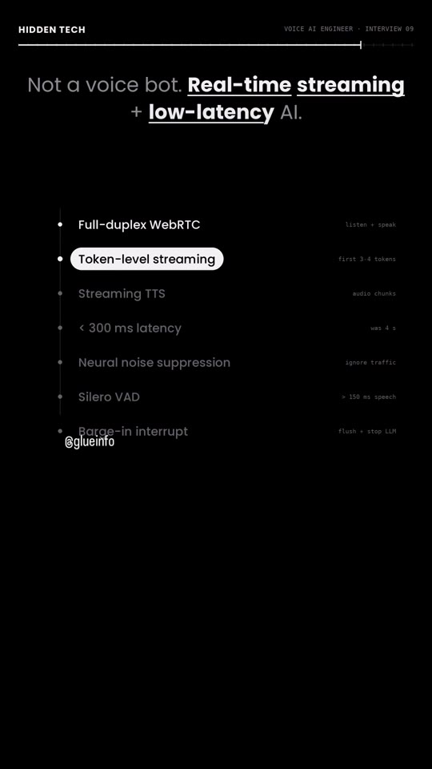
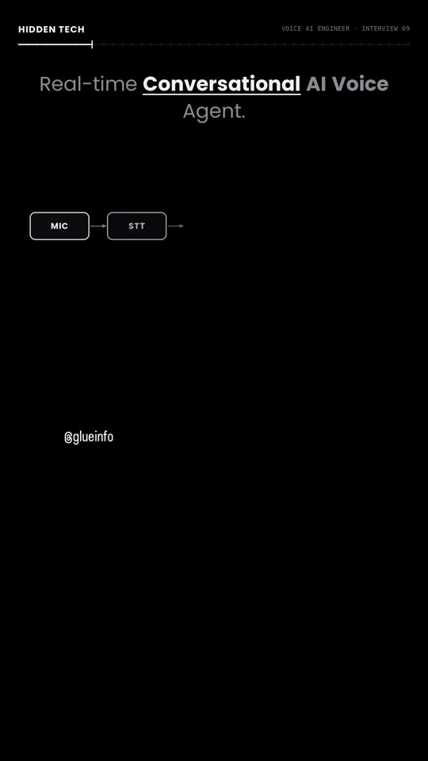
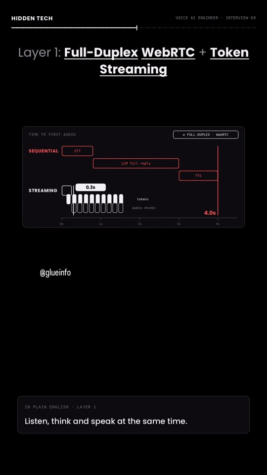
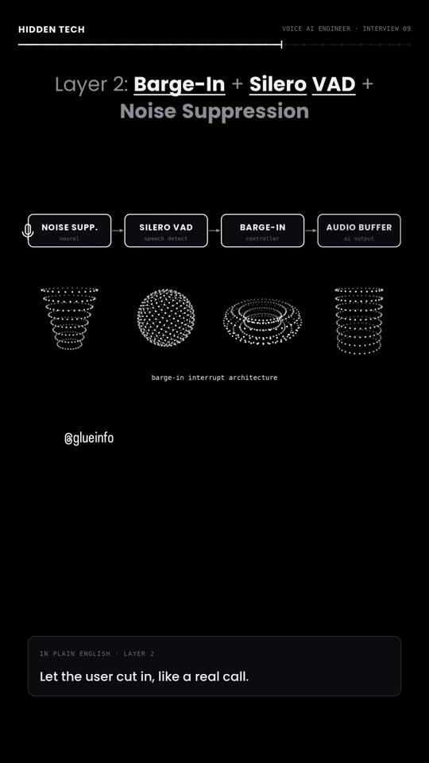
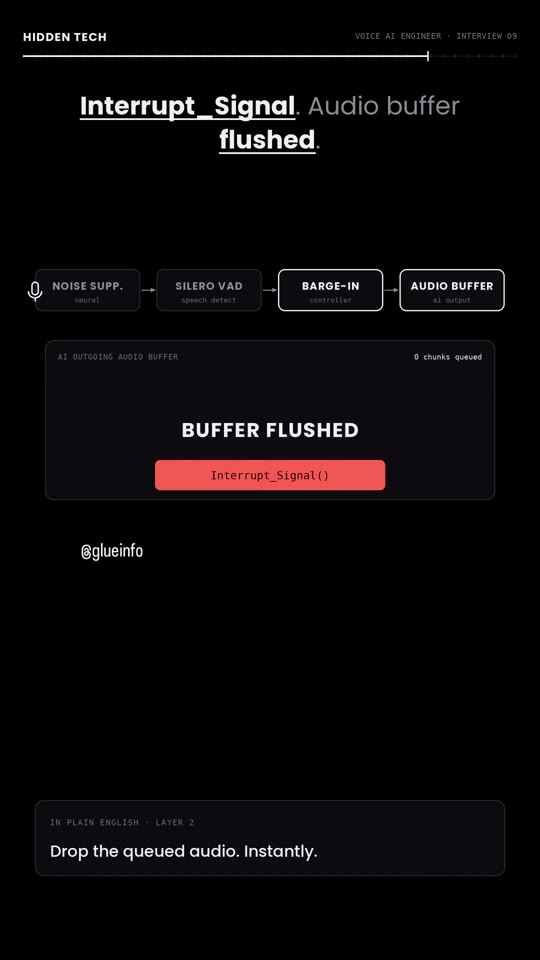

AI · Voice-Agents
Real-Time Conversational Voice AI System Design: Sub-300ms Latency & Barge-In Interrupt Architecture
A production system design blueprint for high-frequency conversational Voice AI agents. Explores the two fatal bottlenecks of naive sequential pipelines (MIC → STT → LLM → TTS → SPEAKER): crippling 4.0-second turnaround latency and dialogue overlap caused by missing barge-in support. Demonstrates how to re-architect the stack using full-duplex WebRTC bidirectional streaming, token-level TTS synthesis (dispatching audio on the first 3–4 generated tokens) to achieve 280ms latency, coupled with a Silero VAD voice activity detection controller and neural noise gate that flushes audio buffers within 150ms of human speech.

Architectural Bottlenecks vs. The 2-Layer Engineering Solution
- The Sequential Pipeline Bottleneck: Standard voice bots chain components sequentially: user audio finishes → Speech-to-Text (STT) transcribes → Large Language Model (LLM) completes full paragraph generation → Text-to-Speech (TTS) synthesizes full WAV buffer → Audio streams to speaker. This creates an unacceptable 4.0-second silence gap and lacks any interrupt mechanism, causing the bot to talk over users when interrupted.
- Layer 1: Full-Duplex WebRTC + Token-Level Streaming Synthesis: Replace sequential REST APIs with a persistent Full-Duplex WebRTC audio connection ("listen, think, and speak simultaneously"). Rather than buffering complete LLM responses, stream generated tokens directly into a chunked neural TTS engine. Upon receiving the first 3–4 tokens, the TTS synthesizes and flushes 20ms–50ms audio chunks over the WebRTC data channel, slashing response latency from 4.0s down to 280ms (∼93% reduction).
-
Layer 2: Barge-In Interrupt Engine (Silero VAD + Buffer Flush):
Conversational naturalness requires the AI to halt immediately when interrupted, without false-triggering on coughs or street sounds:
- Neural Noise Suppression: Strips background vehicular horns, wind, and fan noise before speech detection.
- Silero VAD (Voice Activity Detection): Evaluates speech probability; if human vocal frequencies persist for >150ms, it confirms intent.
- Barge-In Controller: Fires an immediate
Interrupt_Signal(). - Audio Buffer Flush: Instantly drops all unplayed queued audio packets in the client buffer, aborts current LLM token generation (
LLM: STOPPED), and transitions state toAI: LISTENING.
System Design Diagrams




Verbatim Breakdown
| Time / Source | Spoken Audio (Hindi/English) | On-Screen Display / Text |
|---|---|---|
| 00:00 - 00:11 | "Interviewer ne apne phone se ek live call milaya. Speaker on kiya aur seedha bola: 'Yeh hamara AI Voice Agent hai. Isse 30 seconds baat karo aur iska sabse bada production bug fix karke dikhao. Warna interview yahin over.'" | HIDDEN TECH • VOICE AI ENGINEER • INTERVIEW 09 Interviewer ne live call milaya. Speaker on. "Yeh hamara AI Voice Agent hai." 30 seconds. Bug fix karo, warna over. WARNA INTERVIEW OVER |
| 00:12 - 00:27 | "Ek Voice AI Engineer ke 40 LPA wale interview mein jab yeh live test liya gaya, toh 95% coders wahi freeze ho gaye. Dekhte hain tum isko solve kar paate ho ya nahi." | Voice AI Engineer. 40 LPA interview. LIVE TEST • FINAL ROUND: Voice AI Engineer (real-time audio • llm • streaming) • 40 LPA 95% coders froze. Solve kar paoge? Double-tap to like. |
| 00:28 - 00:37 | "Toh problem yeh thi ki company ne customer support ke liye ek real-time conversational AI voice agent banaya. Lekin call par do bade disasters ho rahe the." | Real-time Conversational AI Voice Agent. Sequential Pipeline: [MIC] → [STT] → [LLM] → [TTS] → [SPEAKER] Call par 2 bade disasters. |
| 00:38 - 00:44 | "Pehla: Jab user kuch bolta, toh AI ko jawaab dene mein 4 second ka awkward pause lagta." | Disaster 1: 4-second awkward pause. Call timeline: User speaks → 4.0s silence → AI speaks RESPONSE LATENCY: 4.0 s |
| 00:45 - 00:56 | "Aur doosra: Agar user AI ko beech baat mein tok de ya peeche se thoda sa background noise aa jaaye, toh AI chup hone ke bajaaye user ke upar hi lagataar bolta rehta, aur poora conversation kachra ho jaata." | Disaster 2: user interrupts... ya background noise aaye... AI keeps talking over the user. BARGE-IN SUPPORT: NONE CONVERSATION BROKEN |
| 00:57 - 01:05 | "Ab is voice latency ko 4 second se 300 millisecond par kaise laaoge? Aur AI ko insaan ki tarah beech mein rukna kaise sikhaaoge?" | 4s se 300ms kaise? AI ko rukna kaise sikhaoge? (STOP WHEN INTERRUPTED like a human would) |
| 01:06 - 01:10 | "Bahut se log bolenge ki fast server laga do ya chhota voice model use kar lo." | Most say: faster server or smaller model. [FASTER SERVER: NAIVE - still waits in sequence] | [SMALLER MODEL: NAIVE - dumber answers] The architecture is the bottleneck. |
| 01:11 - 01:15 | "As a candidate agar mujhse yeh interview mein poochha jaaye, toh main iska solution kuch is tarah dunga:" | Interview answer: my solution. |
| 01:16 - 01:25 | "Sabse pehle, hum slow sequential API calls ko hata kar Full-Duplex WebRTC streaming pipeline aur token-level streaming synthesis implement karenge." | Layer 1: Full-Duplex WebRTC + Token Streaming IN PLAIN ENGLISH - LAYER 1: Stop waiting for each step to finish. Listen, think and speak at the same time. |
| 01:26 - 01:38 | "Hum is wait mein nahi baithenge ki LLM pehle poora paragraph likhe aur phir voice bane. Balki jaise hi LLM pehle 3 ya 4 tokens generate karega, streaming Text-to-Speech engine turant audio chunks user ko bhejna shuru kar dega." | Don't wait for the full paragraph. First 3-4 tokens? Audio starts. LLM Output: ["Namaste!", "Main", "aapki"] → First 3-4 tokens → streaming TTS → Audio chunks over WebRTC |
| 01:39 - 01:44 | "Isse response latency 4 second se gir kar seedha 300 millisecond ke andar aa jaayegi." | Latency: 4s se < 300ms. Response Latency: 3.5s → 1.7s → 348ms → 280 ms (-93% LATENCY) Reply starts in under 300 ms. |
| 01:45 - 01:57 | "Doosra: Beech mein tokne aur noise ko handle karne ke liye hum Barge-In Interrupt Architecture ke saath Silero VAD (Voice Activity Detection) aur Neural Noise Suppression setup karenge." | Layer 2: Barge-In + Silero VAD + Noise Suppression Pipeline: [NOISE SUPP. (neural)] → [SILERO VAD (speech detect)] → [BARGE-IN (controller)] → [AUDIO BUFFER (ai output)] Let the user cut in, like a real call. |
| 01:58 - 02:04 | "Yeh system background traffic noise ko ignore karega. Lekin jaise hi detect karega ki insaan ne 150 millisecond se zyada kuch bola hai..." | Traffic noise? Ignored. Human speech > 150ms? Detected. Real speech for 150 ms means: user is talking. |
| 02:05 - 02:13 | "...wo ek instant interrupt signal fire karke AI ke outgoing audio buffer ko turant flush kar dega aur LLM generation ko wahi rok kar user ki nayi baat sunna shuru kar dega." | Interrupt_Signal. Audio buffer flushed. Drop the queued audio. Instantly. LLM stops. AI listens. LLM GENERATION: STOPPED | AI STATE: LISTENING |
| 02:14 - 02:25 | "Toh yeh sirf ek aam voice bot banana nahi hai, balki real-time audio streaming aur low-latency AI engineering ka kamaal hai." | Not a voice bot. Real-time streaming + low-latency AI. • Full-duplex WebRTC (listen + speak) • Token-level streaming (first 3-4 tokens) • Streaming TTS (audio chunks) • < 300 ms latency (was 4 s) • Neural noise suppression (ignore traffic) • Silero VAD (> 150 ms speech) • Barge-in interrupt (flush + stop LLM) |
Recommended Open-Source Stack Components
- Transport Layer: LiveKit / Daily.co / Pion WebRTC (Full-Duplex media streaming).
- Voice Activity Detection (VAD): Silero VAD (Ultra-lightweight DNN speech detector with <1ms processing latency).
- Noise Suppression: DeepFilterNet / RNNoise (Real-time neural ambient audio filtering).
- Streaming TTS Engines: Cartesia Sonic / ElevenLabs Turbo v2 / Kokoro TTS (Sub-100ms first-chunk synthesis).
- Orchestration Frameworks: LiveKit Agents / Pipecat AI (Python/TypeScript real-time voice pipeline state machines).
Try This
- Profile your conversational voice agent: measure the latency delta between user audio completion and first synthesized audio frame. If latency exceeds 500ms, decouple full-paragraph generation and implement token chunking.
- Integrate Silero VAD into your microphone ingest stream with a 150ms speech threshold window, benchmarking false-positive trigger rates against common background office and traffic noise profiles.
- Implement a cancellation handler in your asyncio loop that sends an immediate abort token to your LLM generator and dispatches a buffer-clear command to the WebRTC audio track whenever VAD triggers.